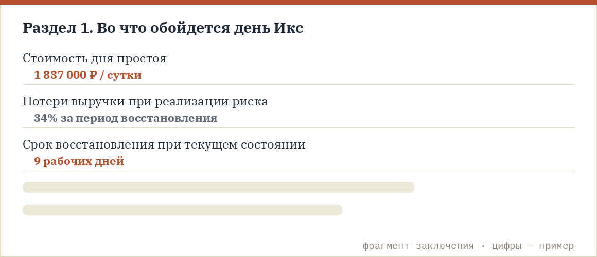
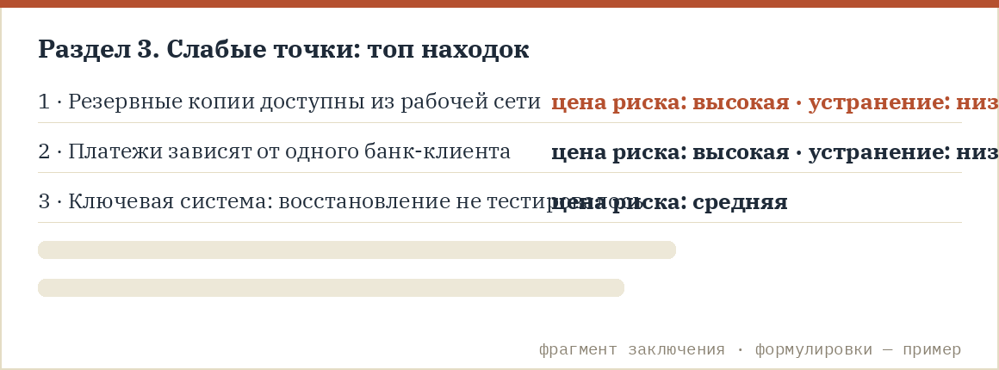
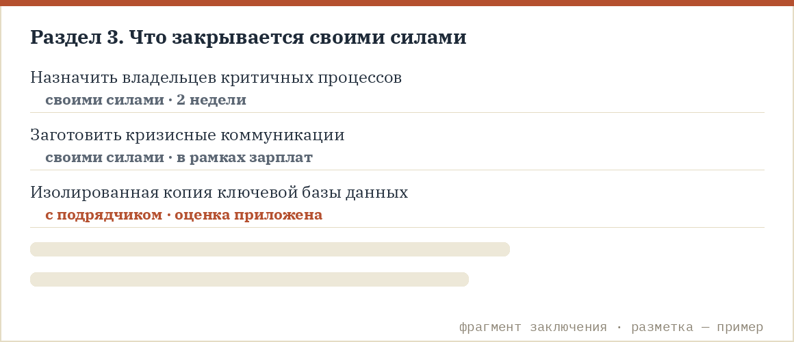
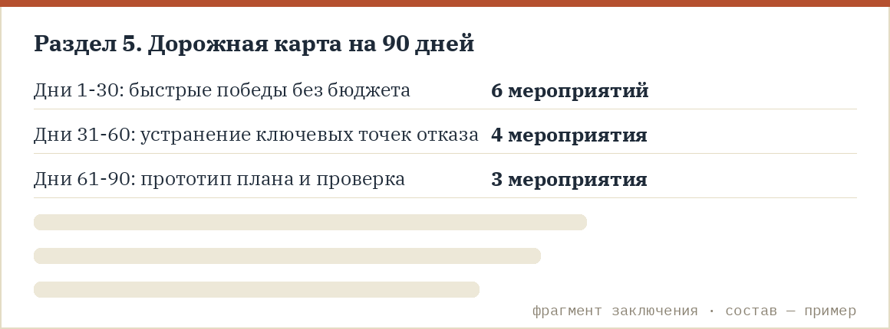

Place in the programme
The Turnkey BCM programme runs in seven steps, and the check comes fifth. By then we already know the company’s economics, its critical processes and the people who make the money, and we test that knowledge against a scenario: ransomware, a fire on site, the loss of a supplier.
Everything built afterwards depends on the check: the recovery scheme, the survival metrics, the team’s preparation.
- 01UnderstandTwo scenarios chosen together with youThese are the scenarios for the check.
- 02Facts and economicsThe cost of one day of downtime and the single points of failure become input data for the check.
- 03Business modelHow revenue is made and what would stop it.
- 04Interviews with key peopleWho actually holds the process together.
- 05TestThe check: the company lives through day X on paperThis stage is described on this page.
- 06FixA recovery scheme designed with the teamBuilt around the gaps found during the check.
- 07Survival metrics and their growthThe index from the check becomes the starting point.
What the CEO gets
A 10-15 page report in management language, with four sections. Figures and wording in the fragments are illustrative.

- A specific calculation in figures.The cost of one day of downtime, lost revenue, recovery time in the current state.

- A list of the weak points that exist today.Sorted by the ratio “cost of the risk / cost of fixing it”.

- An “in-house / with a contractor” split.Which gaps can be closed with organisational measures within existing staff salaries: assigning owners, documenting, preparing communications, separating access rights. And exactly how to do it. In our experience, a noticeable share of the findings is closed this way, with no extra budget.

- A short roadmap.The team works through it on its own.
How the two days run
Day 1 is the review and the economics, day 2 is the “Day X” stress simulation.
How the simulation works, with roles and metrics, is covered in the article on cyber exercises.
- A continuity system diagnostic.Interviews with key people, more than one hundred questions across six areas: critical processes, IT and data, people, suppliers, plans and financial resilience.
- The economics of downtime.In parallel we work out the cost of one day of downtime for your company and the share of revenue you will lose if the risk materialises: in money, based on your management accounts.
- The two scenarios chosen at step 01.The main one is a ransomware attack, the most revealing scenario of our time: in the morning files will not open, there is a ransom demand on the screens, accounting systems and email have stopped.
- A live dialogue with the head of the company and the key team.Who notices first, who has the authority to decide, what we tell employees and clients, how we recover and how long it takes.
- Tabletop testing.A calm, managed conversation that follows the scenario, with no theatrics and no timers. Production systems keep running as usual; the decisions, authority gaps and open questions it brings up are real.
- If ransomware is not the worst nightmare for your industry.At step 01 we choose an equivalent scenario as the main one: an accident at a site, the loss of a key supplier, an IT failure. We still recommend rehearsing on ransomware.
What stays with you after the check
Nine documents that stay in the company.
- The report for the CEO.10-15 pages, in management language.
- Damage calculation in money.The cost of one day of downtime and the share of revenue at risk.
- A model of how the risk affects business processes.What stops, and in what order.
- A map of single points of failure.IT, people, suppliers, sites.
- A resilience score.An index of 0-100 across six areas, the starting point for future measurements.
- Simulation observations.Where decisions stalled, which authorities are not defined, an estimate of the real recovery time.
- A business continuity plan (BCP) prototype.Tailored to your specifics.
- A first-24-hours checklist and draft crisis communications.For employees, clients and partners.
- A 90-day roadmap for strengthening resilience.With the “in-house / with a contractor” split.
What happens next
The check report becomes the working brief for the remaining steps of the programme.
- Step 06, recovery.For every gap in the report, the team designs an action together with us: who declares the incident, where we switch over, what we tell clients. People carry out plans they helped to write.
- Step 07, metrics.The resilience index from the check is recorded as the baseline measurement. Everything that can be fixed for free we fix straight away; for what needs investment we make the case with the damage calculation and leave a plan.
- Repeat check.Six months later, or after major changes, the same scenario is played again, and the difference between the indices shows what has actually changed.
- Ongoing monitoring.To keep the index and the cost of downtime visible to management between checks, they are shown on the continuity dashboard.
- Preparing the system owner.The person who will run the system after the programme takes the ERGP certification.
Frequently asked questions
Why ransomware?
It is the only scenario that stops every process at once and tests IT, people, authority and communications at the same time. Once you have rehearsed it, you are ready for most simpler disruptions.
How many people and how much time will it take on our side?
A management team of 6-10 people: on day 1, interviews of 1-1.5 hours each; on day 2, a 3-4 hour simulation in one block. Production and operations do not stop.
Can we order only the check?
The check is part of the Turnkey BCM programme. For a company that already has a system in place, the programme starts with the check, and after that only the steps its results call for are carried out. Scope and price are calculated for that task.
What if our system is already strong?
Then the check will confirm it with an index and figures, and the next step will be ongoing monitoring on the continuity dashboard.
Can it be done remotely?
Day 1 (the diagnostic): yes. Day 2 (the simulation) works better in person: decisions and team dynamics are only visible face to face. For distributed companies we put together a hybrid format.
The check is part of Turnkey BCM
1-2 months, fixed scope, free fixes included. The plan check, recovery, metrics and a prepared system owner stay with the company.